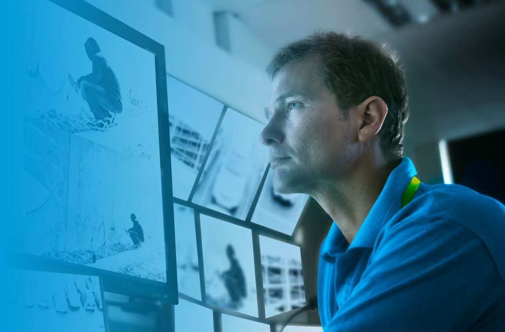

RASTREO Y MONITOREO GESCORP
La tecnología de seguimiento y monitoreo permite a los operadores mantener un ojo virtual tanto en objetos como en personas. Ya sea un paquete en un almacén o un recluso en una prisión, la tecnología puede garantizar que permanezcan a la vista y en el camino correcto.
Entendemos que su negocio es único. Es por eso que ofrecemos una gama de dispositivos y tecnologías de seguimiento de activos que se adaptan a sus requisitos. Desde rastreadores para vehículos hasta etiquetas por Bluetooth® para equipos y llaves, tenemos los dispositivos que necesita y el conocimiento para ayudarlo a encontrar la solución perfecta.
GESCORP puede ayudar a su negocio a rastrear activos, reducir costos y mejorar la experiencia del cliente.
|  |
Obtenga una visión completa 24/7 de sus productos y servicios.Rastree y monitoree personas, lugares y cosas. En un mundo donde los clientes esperan saber la ubicación exacta de un paquete en tránsito, las herramientas precisas de seguimiento y monitoreo son cruciales. Las tecnologías de seguimiento y monitoreo brindan a los operadores una descripción general de su gente, bienes y servicios, ya sea que todavía estén en la fábrica o en tránsito. Es una de las razones por las que una variedad de tecnologías de seguimiento y monitoreo, como los sistemas GPS, el software de gestión y seguimiento de activos han ganado popularidad. |
Detección/seguimiento humano
Para monitorear empleados y/o visitantes
Detección de movimiento
Para identificar la actividad.
Resumen de video
Para revisar imágenes de vigilancia.
Gestión de videos
Para acceder a imágenes de más de una cámara.
Sensores térmicos
Para detectar personas o animales.
Seguimiento de activos
Para monitorear envíos.
Protegemos lo más importanteComo empresa pionera en servicios de seguridad, gestión integrada de riesgos y soluciones de efectivo, somos los socios de confianza con los que puede contar, cuando realmente importa. Nuestros profesionales altamente capacitados van más allá para brindar una amplia gama de soluciones de seguridad líderes en la industria. Con nuestros valores centrales de integridad, confianza, vigilancia y respeto reflejados en todo lo que hacemos, ofrecemos tranquilidad a todos nuestros clientes al rededor del país. Nuestra gente nos distingue porque contratamos y capacitamos al personal más calificado para satisfacer las necesidades de nuestros clientes y promovemos el desarrollo continuo. Obtenemos una comprensión única de las realidades locales y las amenazas potenciales, por lo que podemos aplicar conocimientos exclusivos sobre el terreno y ofrecer soluciones personalizadas. Aseguramos todos los días y hacemos del mundo un lugar más seguro al proteger a las personas, los activos y las operaciones de nuestros clientes. |

|